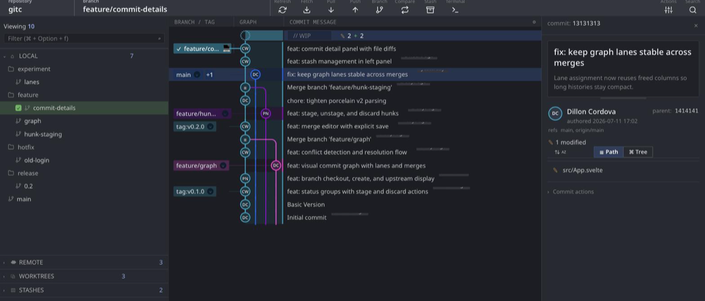
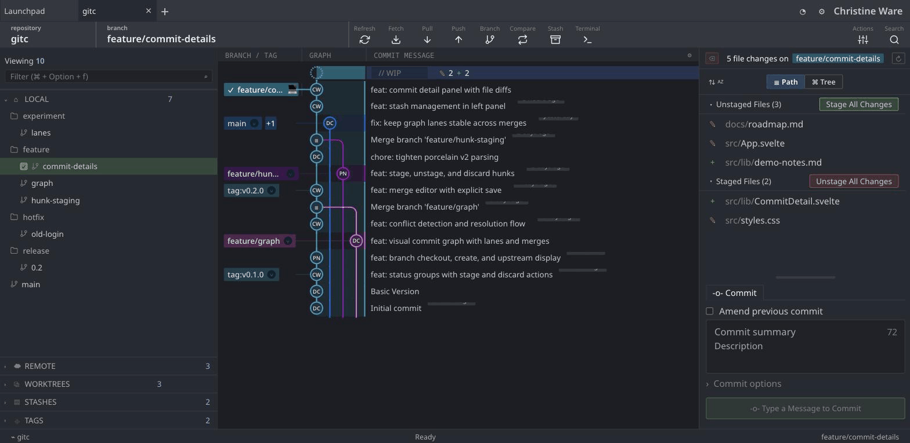
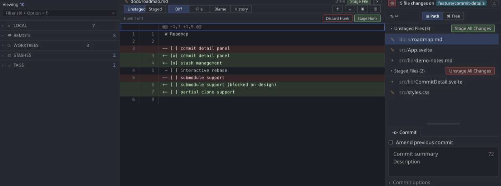

Desktop git client
Runs the git you already have. Rust and Tauri underneath, so it starts like a native app and not a browser.

Clean up
git branch --merged can't see a squash merge. The commits are on main, the branch isn't an ancestor of it, and -d refuses.
gitc checks whether the branch's tree is already reachable, so squash-merged work shows up next to the ordinary kind — with what's gone from the remote, and what nobody has touched in a month.
--merged listed none of them.

Stage
Stage, unstage or discard a single hunk. Side-by-side or unified, blame and history on the same file without leaving it.

Rewrite
Reorder, squash, fixup, reword, drop. Conflicts drop into the same merge editor as everything else, and ORIG_HEAD is one button away if you don't like the result.
Interactive rebase is experimental. It needs a clean tree, and it doesn't do edit, break or autosquash yet.
Build
Every git operation is the real git binary. Nothing is reimplemented, so your hooks, config and credential helper all still apply.